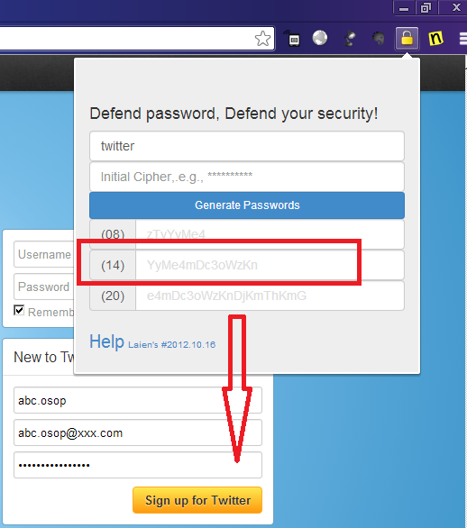

What’s OSOP
- From now , you cat fly securely on Internet without remembering various crazed passwords for different sites.
- By using this Web tool or Chrome extension, you can generate different passwords for different sites by using an initial cipher.
- Generated passwords are complex enough, which can meet all kinds of registration requirements!
- To keep away form password remembering
- No worry about password stolen, and exposure from hackers.
Why I need
- Let me ask you some questions:
- How many passwords are you using today on Internet?
- How many times do you change your passwords for your E-mail account?
- If your Twitter password is exposed or hacked , whether this will affect your Facebook or Skype account?
- Are you tired of fighting with your bad memory or worrying about your privacy on Internet?
- Did you try to find a new way to get out of this nightmare?
- Now, we are facing the same issue!
- I want to use fully different passwords for each different sites I signed up.
- All the passwords should not have implicit relations between each other.
- I don’t want to remember all the passwords
- If one of my password on somesite is hacked unfortunately, accounts registered on other sites should not be negatively affected.
How it works
To make a great step for password using on Internet, you just need to do:
- Enter OSOP user interface form Chrome extension or OSOP Web Site
- Input the target system name or domain ( e.g., google, facebook, skype.com.)
- Give an initial cipher and remember it (e.g., mynameisgoogle!, protect2013##,Hellokittttty) . You only need to remember this one, no others!
- Click the button to generate passwords with different length (High, Middle, Low).
- Choose one password as required to modify your existing password on target site (e.g., twitter, skype, google).
- Next time, when you are signing in the target site, use the same step from 1~4, and copy the password to your login form.
The more you use, the convenienter you will get and feel.
Is it secure
Absolutely, It’s secure! To put your nervous mind down, here are some technical theories for the tool:
- It generates passwords for you, but knows nothing about your username or account info.
- It is developed by Java Script which only runs on your client browser without any interaction with remote server. None privacy info will be collected.
- Multi-MD5 irreversible algorithm is used. If one generated password is exposed unfortunately, bay guys cannot get your initial cipher by using reversed engineering.
- Extra words can be added or deleted from the generated password, if you have special hobby in security.
- To protect your password, all the generated passwords will be removed automatically from the input form after 60 seconds
- It’s not suggested to use this tool for your main e-mail account, because mostly our main e-mail account can be used to reset password by using the function Forgot Password.
Contacts
Web Version:One Site One Password
Project site:Fork in GitHub
Visit on Mobile:
Author:
Screen Shot:
